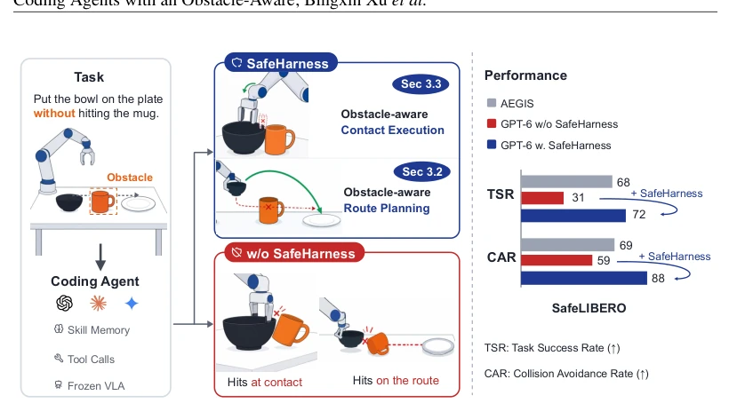
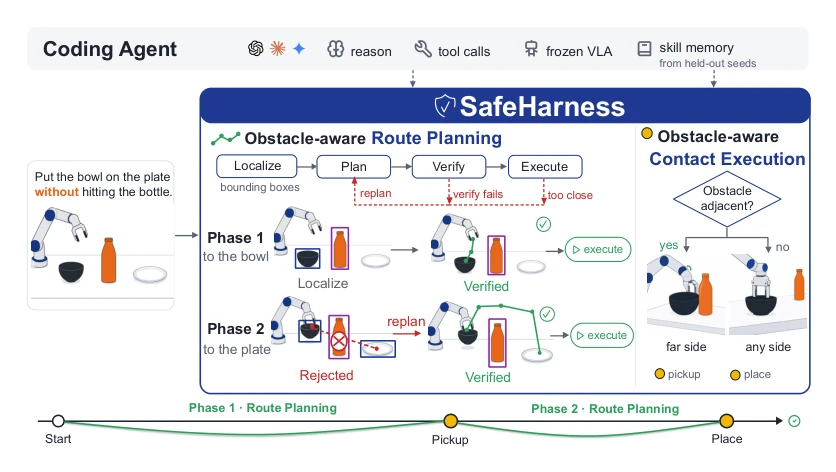
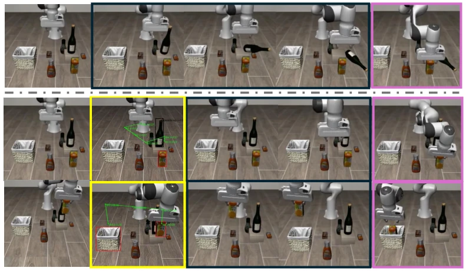
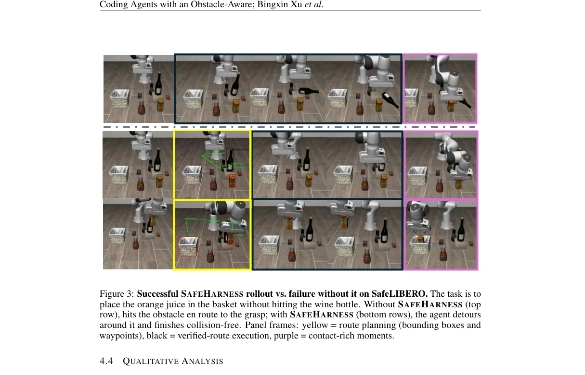

This paper pours cold water on the "safety illusion" of Coding Agents. Although models like GPT-6 can write code to control robotic arms, they turn a blind eye to obstacles, prioritizing task completion over safety. The authors did not attempt to fine-tune the model but instead developed an "external module" SAFEHARNESS, forcibly embedding safety constraints into the planning process. This approach is quite clever, given that it is too difficult for large models to remember "do not bump into cups" within long contexts. However, relying on an external verifier means the model itself remains essentially "blind," merely tethered by a rope. The experimental data is indeed impressive, with collision rates significantly reduced, but this also exposes the shortcomings of Coding Agents: they excel at writing logic but lack understanding of avoidance in the physical world. This serves as a shot in the arm for embodied intelligence, yet also reminds us that relying solely on Prompts and simple harnesses may be insufficient; true safety still depends on the model understanding physical constraints.
研究动机Motivation
现有 Coding Agent 研究多聚焦任务成功率（TSR），却忽视了操作过程中的物理安全 [10]。在 SafeLIBERO 等基准中，机器人常为完成任务而碰撞障碍物，导致硬件损坏或人员受伤。虽然已有安全控制方法如 AEGIS [15] 通过控制屏障函数（Control Barrier Functions） [1] 事后修正动作，但这属于“亡羊补牢”，无法在规划阶段规避风险。更重要的是，Coding Agent 依赖长上下文对话，随着步骤增加，初始的安全指令会被遗忘（Lost in the Middle） [29]，导致模型只优化目标而忽略约束。本文旨在解决这一“成功与安全”的割裂问题，证明单纯依靠模型指令无法保证安全，必须引入外部机制将安全提升为第一优先级。
Existing Coding Agent research predominantly focuses on Task Success Rate (TSR), yet overlooks physical safety during operation [10]. In benchmarks such as SafeLIBERO, robots often collide with obstacles to complete tasks, resulting in hardware damage or personnel injury. Although existing safety control methods like AEGIS [15] correct actions post-hoc via Control Barrier Functions (CBF) [1], this is akin to "mending the fold after the sheep is lost" and cannot mitigate risks during the planning phase. More critically, Coding Agents rely on long-context dialogue; as steps accumulate, initial safety instructions are forgotten (Lost in the Middle) [29], causing the model to optimize goals while neglecting constraints. This paper aims to address this disconnection between "success and safety," demonstrating that relying solely on model instructions cannot guarantee safety, and external mechanisms must be introduced to elevate safety to the first priority.

Figure 1: SAFEHARNESS puts safety on par with task completion. Coding agent receives a task instruction with a safety constraint, along with observation images. SAFEHARNESS then equips it with obstacle-aware route planning (Sec. 3.2) and obstacle-aware contact execution (Sec. 3.3) to enforce safety throughout the task. demonstrations lowers its collision rate by under three points [10]. Completing the task and touching nothing else are two halves of one requirement.
SAFEHARNESS decomposes operations into two stages: "path planning" and "contact execution," corresponding to free-space movement and contact-intensive actions, respectively. The overall process adopts a "plan-verify-execute" loop. First, a segmentation model [7] is utilized to Ground scene objects (targets and obstacles) into bounding boxes. In the path planning stage, the model generates a sequence of path points, and an external verifier checks whether the path intersects with obstacle boxes; if a conflict arises, re-planning is triggered to ensure the path is cleared prior to execution. In the contact execution stage, it detects whether there are adjacent obstacles near the target; if present, it selects a grasping side away from obstacles or adjusts the robotic arm posture to prevent the contact volume from sweeping over obstacles. These two modules operate as "external modules," without modifying the underlying VLA policy [19] or skill library, but instead enforcing constraints on the decision space through tool interfaces. This design circumvents instruction drift caused by long contexts, transforming safety constraints from language prompts into geometric verification.

Figure 2: SAFEHARNESS overview. The task is cut at its contact events into phases, and both components run once per phase. ❶Obstacle-aware route planning: the scene is grounded as boxes, the route of the current phase is planned, verified against the obstacle, and only then executed, with a failed verification or a halt during execution sending the loop back to planning. ❷Obstacle-aware contact execution: the contact target is tested for an adjacent obstacle, and the contact is made from the far side whenever one is found. held, the object as well. A candidate that intrudes into the box is rejected and the model replans, until a route passes and is released for execution.
实验Experiments
在 SafeLIBERO 基准上测试，包含 32 个任务，分为 Level I（障碍物靠近目标）和 Level II（障碍物在路径上）。对比基线包括 OpenVLA [23]、π0.5 [19] 及 SOTA 安全方法 AEGIS [15]。评测指标为任务成功率（TSR）和碰撞避免率（CAR）。结果显示，GPT-6 配合 SAFEHARNESS 达到 71.9% TSR 和 87.5% CAR，显著优于 AEGIS（68.9% CAR）及无 harness 基线。消融实验表明，仅增强模型规模无法解决安全缺陷，必须引入 Obstacle-aware 模块。Level II 的 CAR 提升尤其明显，证明路径验证有效。然而，任务成功率在 Level II 仍略低，暗示验证后的绕路可能消耗更多步数预算。
Tested on the SafeLIBERO benchmark, comprising 32 tasks divided into Level I (obstacles near target) and Level II (obstacles on the path). Comparison baselines include OpenVLA [23], π0.5 [19], and the state-of-the-art (SOTA) safety method AEGIS [15]. Evaluation metrics include Task Success Rate (TSR) and Collision Avoidance Rate (CAR). Results show that GPT-6 combined with SAFEHARNESS achieved 71.9% TSR and 87.5% CAR, significantly outperforming AEGIS (68.9% CAR) and the no-harness baseline. Ablation studies indicate that merely enhancing model scale cannot resolve safety defects; an Obstacle-aware module must be introduced. The CAR improvement in Level II is particularly pronounced, demonstrating the effectiveness of path verification. However, the task success rate in Level II remains slightly lower, suggesting that detours after verification may consume more step budget.

Figure 3: Successful SAFEHARNESS rollout vs. failure without it on SafeLIBERO. The task is to place the orange juice in the basket without hitting the wine bottle. Without SAFEHARNESS (top row), hits the obstacle en route to the grasp; with SAFEHARNESS (bottom rows), the agent detours around it and finishes collision-free. Panel frames: yellow = route planning (bounding boxes and waypoints), black = verified-route execution, purple = contact-rich moments.
其他图片Other Figures

Fig. 3 contrasts a failed and a successful rollout on the same SafeLIBERO [15] scene. The task instructs the agent to pick up the orange juice and place it in the basket while not colliding with the wine bottle. The skills-only agent (top row) acknowledges the bottle in its reasoning, and the acknowledgment does not survive into the motion. Its traces show a consistent pattern: the constraint is mentioned in the first few reasoning steps and then drops out, and the plan that follows takes the shortest line at grasp height, straight through the bottle. The agent optimizes for the task goal alone, as if success were defined without the constraint rather than under it. SAFEHARNESS (bottom rows) instead clears the bottle and completes the task. The constraint holds because every route is check